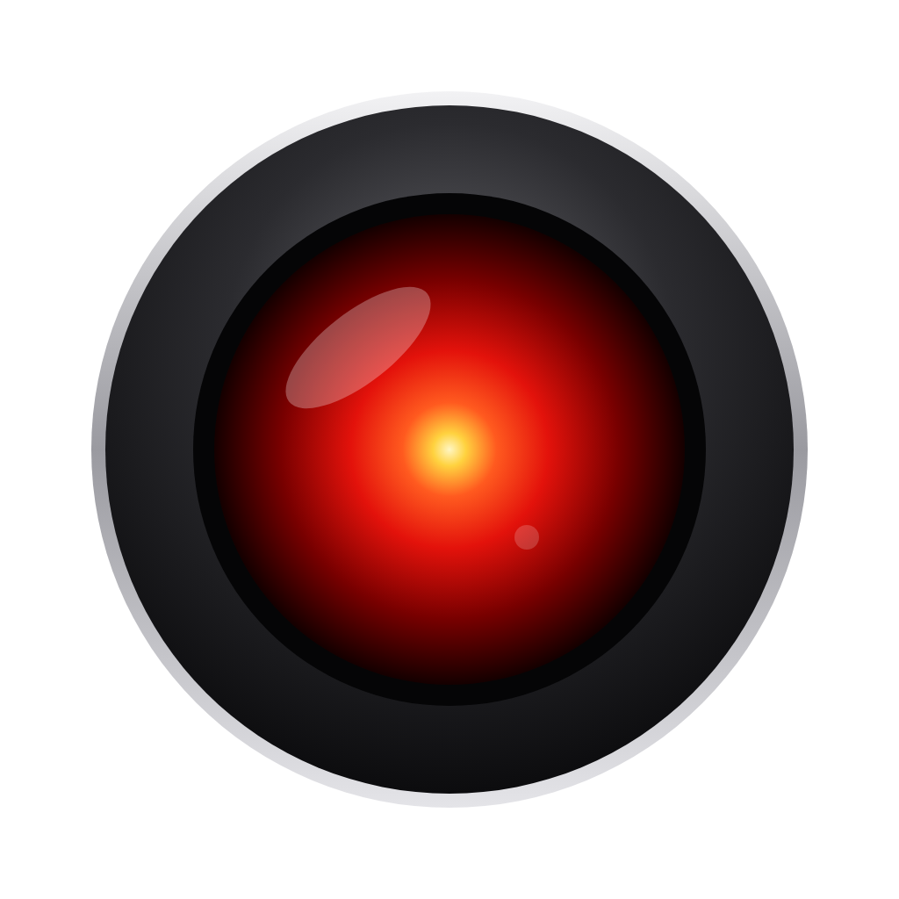
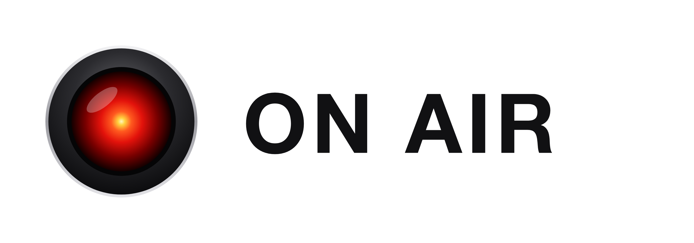
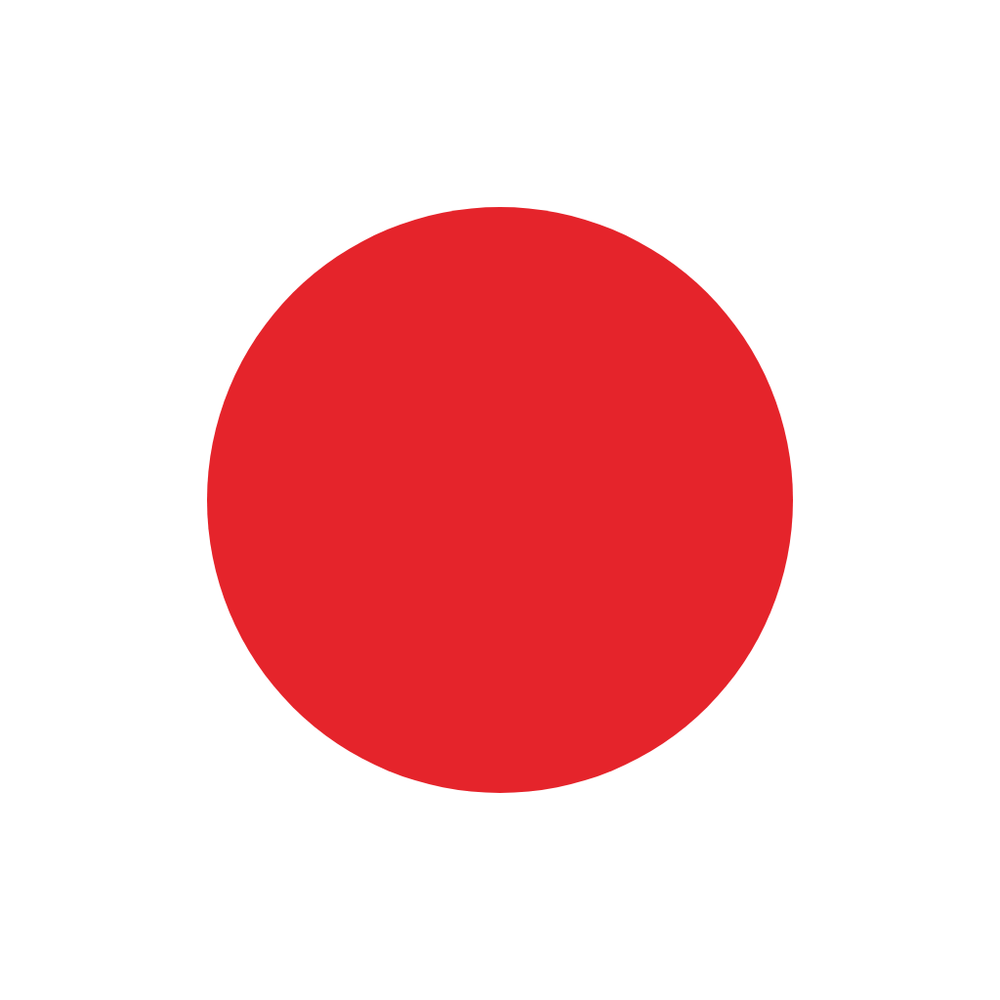
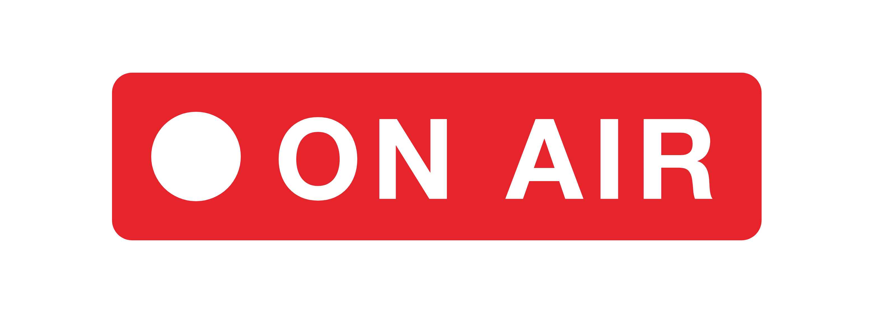
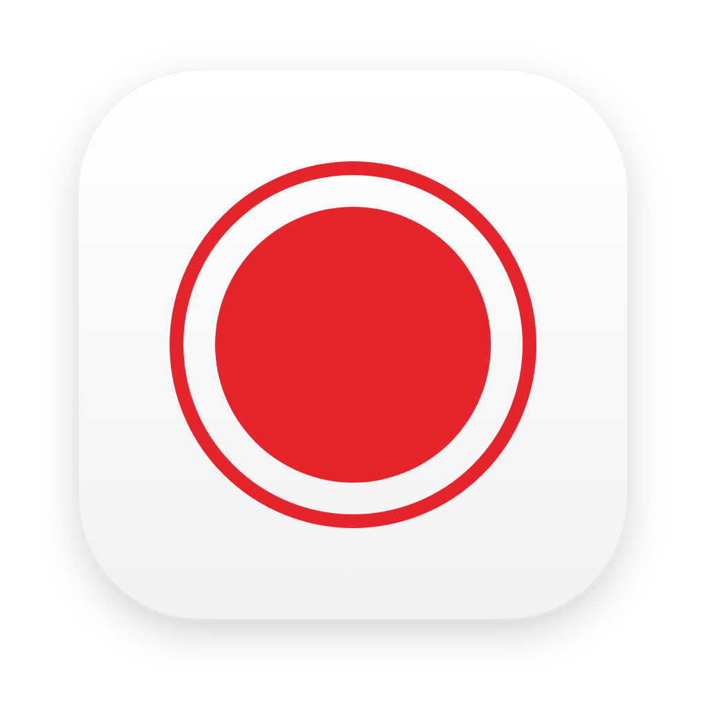
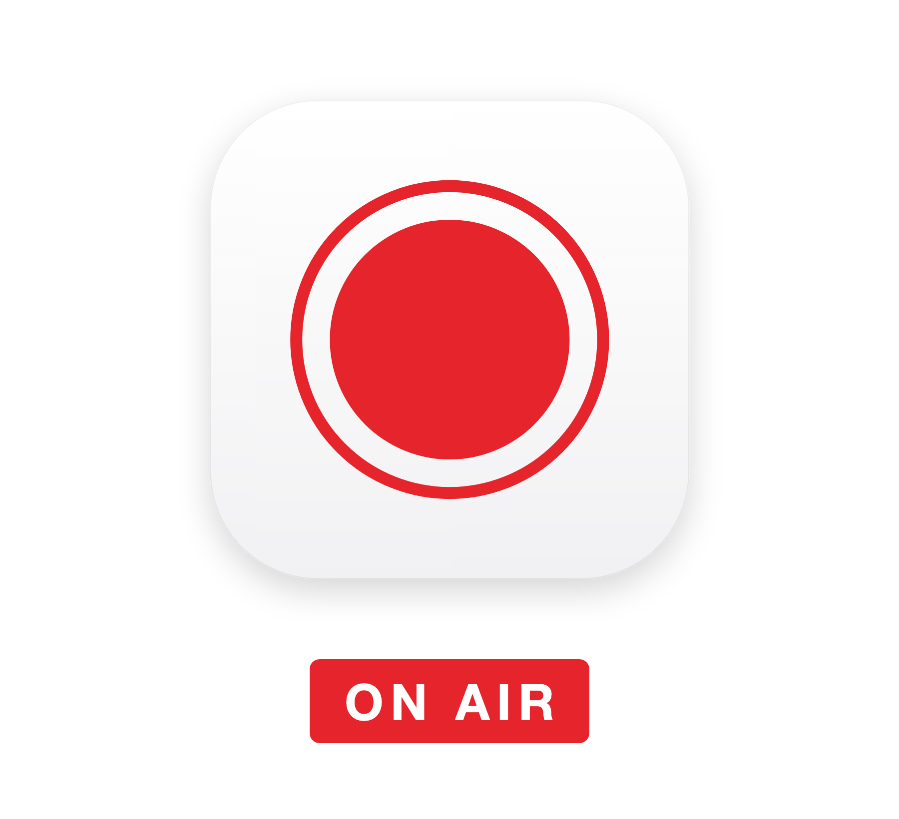
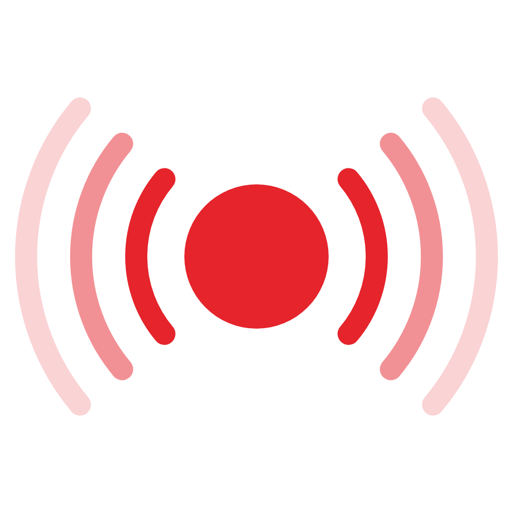
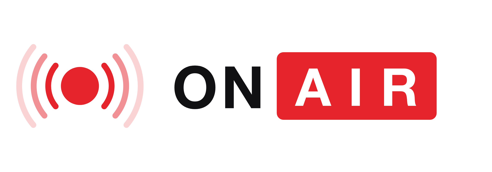

Partimos del encargo: el piloto de grabación como símbolo, un rojo sobre blanco con algo del ojo de HAL 9000, y el nombre «ON AIR» al lado o pequeño en blanco sobre caja roja. Las cuatro rutas comparten color y forma base; cambian en cuánta personalidad cargan y en cómo aguantan a tamaño pequeño.
Punto rojo de «rec», sobre blanco.
HAL 9000, 2001: Una odisea del espacio.
«ON AIR» al lado, o pequeño en blanco sobre rojo.
#E5242B — un único rojo para las cuatro rutas.
La cita directa a HAL: un ojo rojo con núcleo incandescente, bisel oscuro y aro metálico. No dice «grabar», dice «alguien está mirando». El nombre va al lado, negro y sólido, para que el ojo sea el único elemento con brillo.


El punto rojo de grabar y nada más. Toda la marca descansa en un círculo plano de un solo color. El nombre se convierte en el cartel luminoso de un estudio de radio: caja roja, punto y letras en blanco, el símbolo invertido.


Pensada desde el Dock de macOS. Un icono blanco con el punto rojo rodeado de un anillo fino, como el botón de obturador o la luz «tally» que se enciende en una cámara cuando estás en directo. Debajo, el nombre pequeño en blanco sobre caja roja.


El punto deja de grabar y empieza a emitir: tres ondas a cada lado que se desvanecen. En el nombre, «ON» en negro y «AIR» encendido en la caja roja, como un rótulo que se activa.


Si hubiera que elegir hoy, iríamos con 01 Lente como símbolo, porque es la única que recoge de verdad la referencia a HAL y se recuerda. Sus problemas a tamaño pequeño tienen solución si se combina con otras rutas:
Para la siguiente ronda: elegir una ruta (o la combinación) y la tipografía definitiva del nombre.